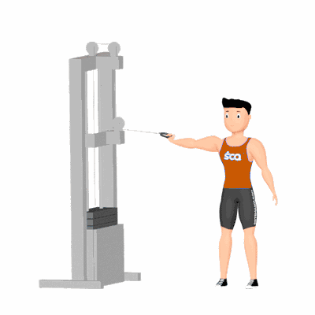

Rosca Bíceps Unilateral Polia Alta Crossover

Exercício isolador de bíceps realizado na polia alta do crossover, que permite trabalho unilateral, maior controle de amplitude e equilíbrio de força entre os lados. Indicado para hipertrofia e definição do bíceps em praticantes de todos os níveis.
Ficha Técnica
Tipo: Musculação
Grupo Muscular: Bíceps
Aparelho: Nenhum
Músculos: Nenhum
Como realizar
- Ajuste a polia na posição alta e selecione carga adequada;
- Posicione-se de lado à estação crossover e segure a alça com pegada supinada;
- Mantenha o cotovelo junto ao tronco e o antebraço estendido;
- Inspire e flexione o cotovelo, aproximando a mão ao ombro e contraindo o bíceps;
- Expire e retorne de forma controlada à posição inicial;
- Repita as repetições e troque de lado.
 RC STORE
RC STORE